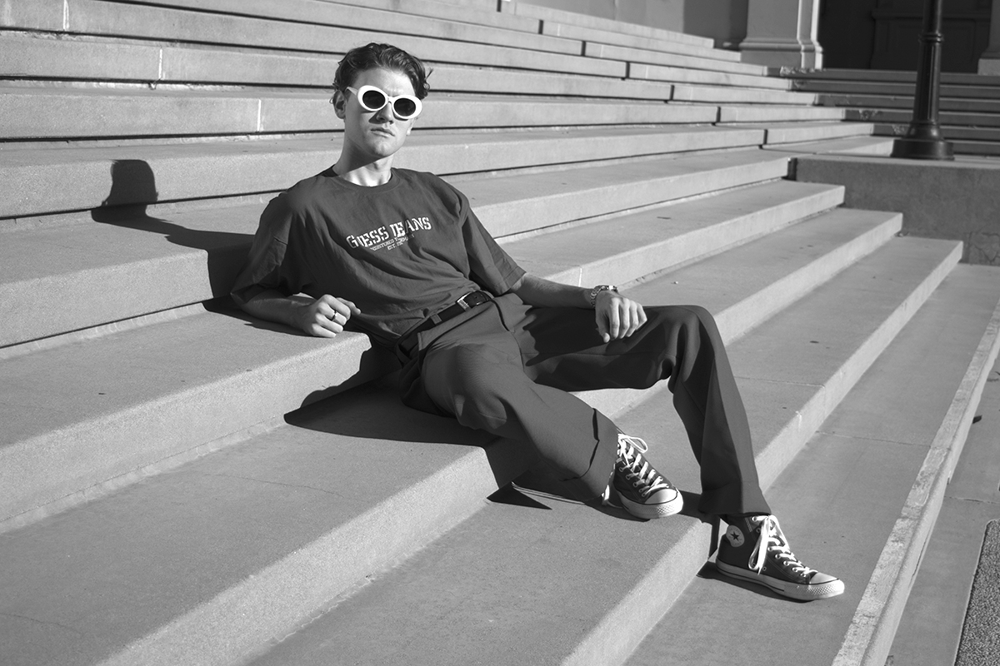
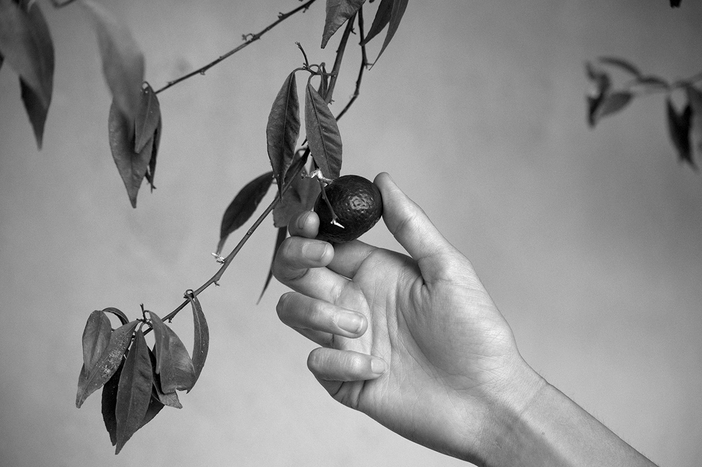
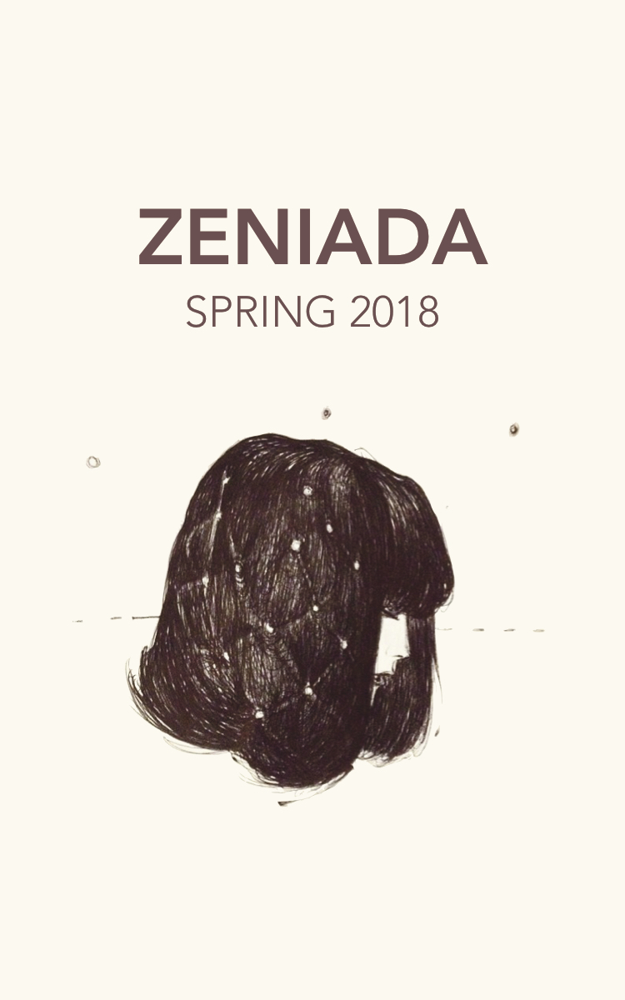

ZeniadaFall 2017
Centrifuge
Then he showed us the machine
that could separate, by density, the good oil
from the other parts that had made their way into the mix
somewhere along the thick knit of pipe
that traced its way through the onshore refinery.
It was unlike the other machines, smaller
yet heavy in its construction, years of rust
built up on the exterior, the carbon-steel chamber
completely sealed from the outside.
It looked like a slow cooker
but the mechanic knew better, and with a clamp
and a switch he sent the contents spinning
with measured, careful force. He let us step around it,
so we did, and we thought maybe from this angle
we could catch some of its secrets: the dark,
chemical kind that would tell us something
about ourselves, how we could mingle at times
yet also fly apart. But through
the whole process, the machine kept
shut, just like it was supposed to, its hum
increasing with steady intensity until it found
the right pitch, somehow revealing nothing
about the in-between, though I can always
imagine: a slurry of slick fluid, thrown
against the walls of the hollow cylinder like children
at the carnival, strapped vertically into the slots
of the Gravitron, spinning, all facing inward—
like the earth, with its people
only at the edges, revolving around
a predetermined center, comfortable this way,
where, because of some invisible pull,
we are all held neatly into place.
Jessica Harsono is originally from Chino Hills, CA. She currently attends Johns Hopkins University, where she studies mechanical engineering. Her poems also appear or are forthcoming in The Dialectic and Tar River Poetry.
Next | Table of Contents

Gabby Gonzalez Carpio is a freshman at Occidental College. She was born and raised in New York City.
Previous | Next | Table of Contentsin enemy (vulnerable) territory: reflections on intimacy
beauty is in the neurosis of the beholder
honey is in the palm of the bee holder
honey, you’ve got me in the palm of your hand
=
I love our wet drum
with its many parts:
slaps like cymbals
snarls like snare
rolling sighs
between my thighs
what’s that, demise?
in your selva eyes
=
thick current of love power
surges through my node-joints and wire-nerves
up into my rod-bones and satellite-dish-skull
signals swirl, echo
ring like wine in a glass
my love power comes from the bounce that lives
in the balls of my greek feet, second toe longest
=
what do you do when you’re all alone in the world?
and what do you do when you’re leaning to the right on your own left
shoulder crying in the shower, one big wet knot?
and what do you do when you’ve let the wrong person live inside of you for too long?
=
It wasn’t you who taught me how to dance of course.
this has lived in me since I arrived here,
sometimes I forget I existed before you
=
first you drink ten loaves of bread worth of beer with your fellow heartbrokens, because you hate beer, because you want to feel gross of your own accord, because you don’t care about yourself. you just realized you haven’t cared for yourself in a long time.
=
i deleted twitter but i still compose tweets in my head
i pulled you out of me but you’re still there when i need you
have you even left yet, or did you just become quiet suddenly? like someone who’s been caught?
i did just find you out, after all.
you were right under my nose, resting on the hairs of my upper lip
you know, the dark ones you tease me about.
the ones you tug at with your teeth
the ones you tickle when i’m asleep
=
here, i have made my home in this terrible no-man’s land
in enemy (vulnerable) territory—
stuck past the verge of tears—
i am no soldier, just a lost gun
cold and wet
=
then you put your nice heels on and your sexy green shirt over that handmedown bra that’s too big because sometimes it’s fun to dress up like a girl. and when people get scared by that radiant aura you just can’t turn off no matter how hard you try, you take a long walk through dark alleys with those heels because everyone’s always told you not to. you don’t care about yourself, you haven’t cared for yourself in a long time. but don’t worry about what will happen. you’ll start caring about yourself again soon. you’ll run into some kitties and some lonely restaurant owners, that’s all. and you’ll get your sexy green shirt sweaty for nothing, that’s all.
=
Your presence does to me what wine does to my mother. It makes me grin and tell stories I’m too scared to remember around anyone else.
Sometimes I face my bare feet toward the clouds just so I can feel the blood rush into my toes when I rise,
when I rise
do
not
fear
=
write a poem for every round that’s in your chamber.
it’s not your fault. say it again.
it’s not our fault they turned us into guns.
WE ALL MISS FIRE
MX. FIRE, ME
Katerina Pavlidis studies English at Vassar College. Katerina comes from Greece and lives in the Bay Area.
Previous | Next | Table of ContentsAll of the flowers are dead now
All of the flowers are dead now
Mama said.
Lavender buds;
the dried purple rises in its flesh, crack
as the heads, crushed, in my fingers wait,
throb for water.
I like my sandpaper hands,
when the breeze hides in the trees—
so you see, so you see
I’m okay. The headache— headaches,
just won’t go away.
That’s the reason for five, six, seven days off school
I say to my friends
All of the flowers are dead.
Abbey Green is a second-year studying Neuroscience and Philosophy at Middlebury College. She is from Traverse City, Michigan.
Previous | Next | Table of ContentsFine
And besides I always think better
when crickets make that sound
and this time I
thought better about Lucas
so I wasn't thinking about any of that other stuff
I just thought
about football and how
good he used to be
at football
and about this catch he made in the quarterfinals
and how his left arm extended over that safety's right shoulder
and how he looked
like a superhero or something
like the best we'd ever seen
but then I had to take a piss
so I stood up
and brushed the dirt off my clothes
and walked behind this one tree because
it was the ugliest or something
and I unzipped my jeans
and the piss came out fast
which is how it normally comes out
when you drink
and I could see the ants
climbing up the bark
and I pretended I was God making it rain on them.
Brian Ginsberg is a senior at Brown University concentrating in English. He is from Los Angeles, California.
Previous | Table of Contents